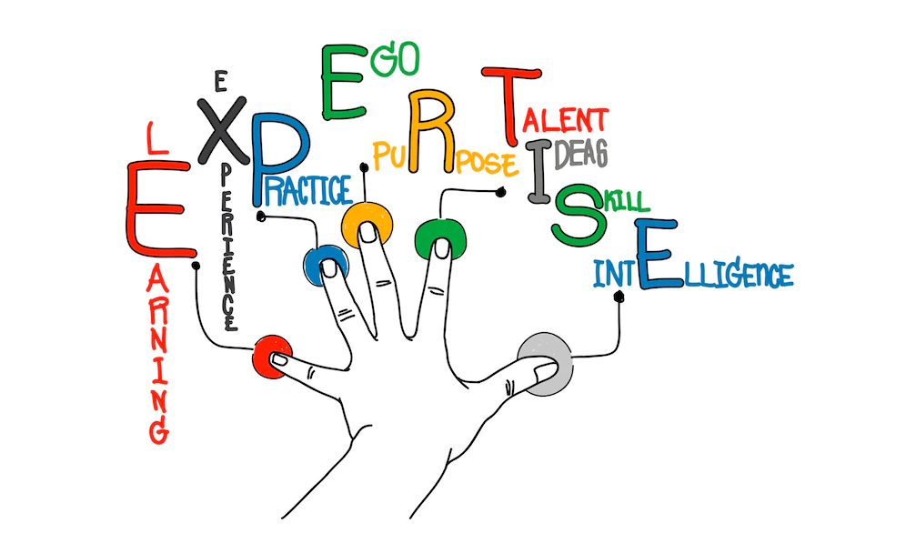

Leaf Disease Detection using Deep learning
The goal of the project is to develop a deep learning model that can accurately and efficiently detect leaf diseases from images of potato leaves, which can then be used in the field of agriculture to help farmers identify and treat diseases on their crops.
Hi,
I'm Snehal Tandel
Show CV
About Me
I'am Snehal
Scientist with strong math background and 1 year + experience using predictive modeling, data processing, and data mining algorithms to solve challenging business problems. Involved in Python open source community and passionate about deep learning.
- Birthday: 20 Jan 1999
- City: Navsari, Gujarat
- University: Rastriya Raksha University, Gandinagar
- Departmant: Data science & Machine Learning
- Education:
- PG Diploma in Data Science & Machine Learning
Rastriya Raksha University ,Gandhinagar
Nov 2020 – Nov 2021
BSc Physics-Maths
B.P.Baria Science Institute, Navsari
Jun 2017 – Jun 2020
Skills
My Skills
Below you can review which languages I work with and which frameworks I use.
Programming LanguagePython
Data Science
Machine Learning, NumPy, SciPy, Pandas, SciKit-Learn, Matplotlib,Pyspark , Dask,Tensorflow , Keras
Machine Learning, NumPy, SciPy, Pandas, SciKit-Learn, Matplotlib,Pyspark , Dask,Tensorflow , Keras
Web Development GIT , GitHub , Git , AWS,
Flask
Deep Learning skillsComputer Vision ,
ANN(Artificial Neural Network) , CNN(Convolution Neural Network) ,LSTM ,YOLO ,NLP

Experience
My Experience
Blue Data Consulting Pvt Ltd
Nov-2021 to Present
Nov-2021 to Present